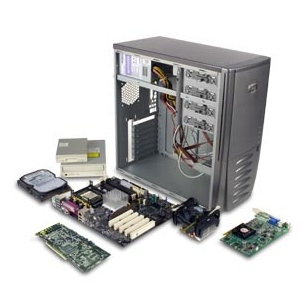

Sistemas Microinformáticos y redes
Ciclo Medio
Instalar, configurar y mantener sistemas microinformáticos, aislados o en red, así como redes locales en pequeños entornos, asegurando su funcionalidad y aplicando los protocolos de calidad, seguridad y respeto al medio ambiente establecidos.

- Montaje y mantenimiento de equipo
- Sistemas operativos monopuesto
- Aplicaciones ofimáticas
- Sistemas operativos en red
- Redes locales
- Seguridad informática
- Servicios en red
- Aplicaciones web
- Formación y orientación laboral
- Empresa e iniciativa emprendedora
- Formación en Centros de Trabajo (F.C.T)
- Lengua extranjera del entorno profesional: Inglés
Puestos de trabajo más relavantes:
- Técnico instalador-reparador de equipos informáticos
- Técnicos de soporte informático
- Técnico de redes de datos
- Reparador de periféricos de sistemas microinformados
- Comercial de microinformática
- Operador de tele-asistencia
- Operador de sistemas